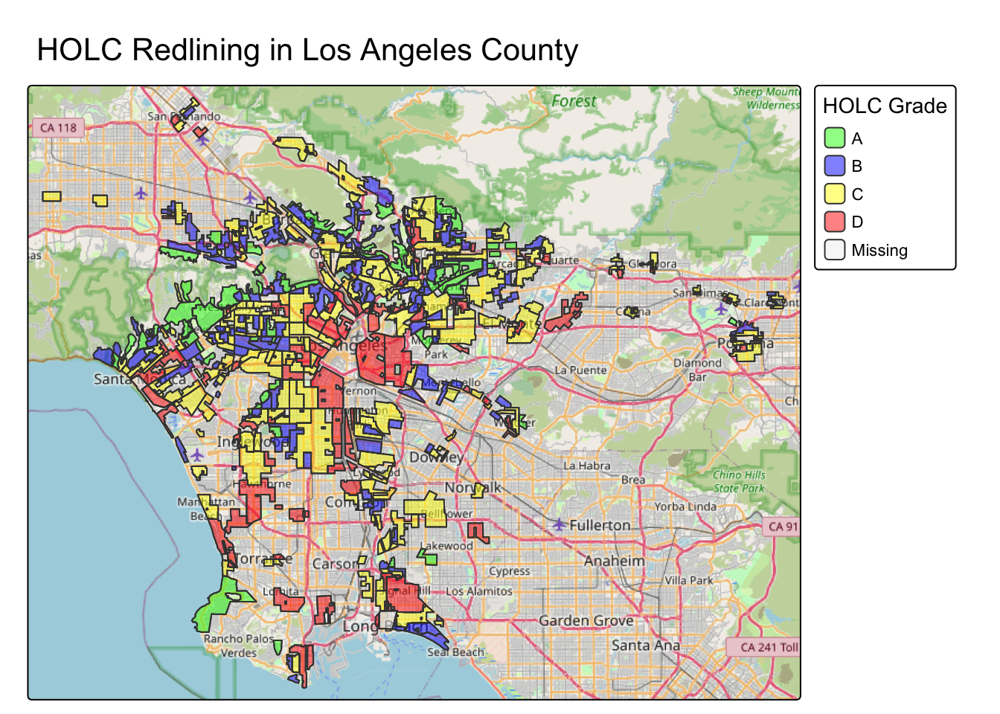
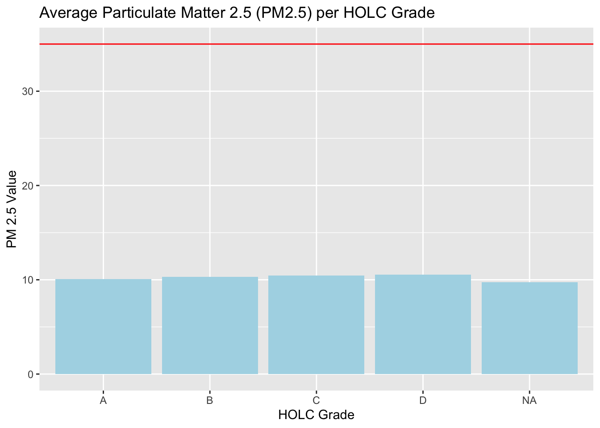
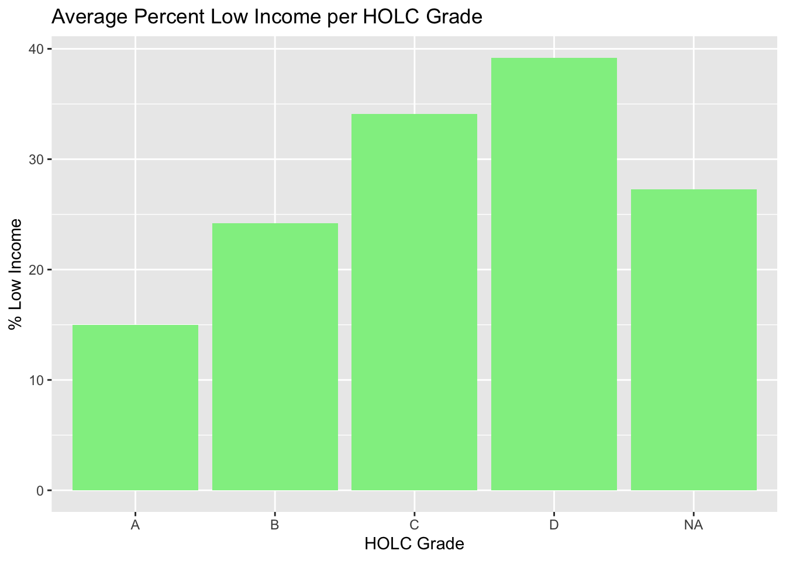
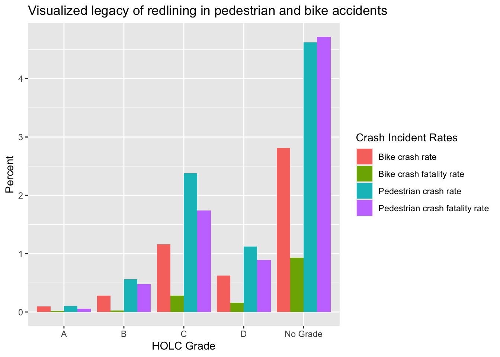

# Loading in the libraries
library(tidyverse)
library(here)
library(sf)
library(tmap)
# Loading in the data
ejscreen <- st_read(
'/Users/cuvlin/Documents/MEDS/eds223/eds223-hw2/data/data 2/ejscreen/EJSCREEN_2023_BG_StatePct_with_AS_CNMI_GU_VI.gdb'
)
ej_la <- ejscreen |>
filter(CNTY_NAME == "Los Angeles County") |>
filter(ST_ABBREV == "CA") |>
st_make_valid()
mapping_inqeuality_LA <- st_read(
'/Users/cuvlin/Documents/MEDS/eds223/eds223-hw2/data/data 2/mapping-inequality/mapping-inequality-los-angeles.json'
) |>
st_make_valid()
crash_reports <- read_csv(
'/Users/cuvlin/Documents/MEDS/eds223/eds223-hw2/data/data 2/SWITRS_LA/Crashes.csv'
) |>
drop_na(POINT_X, POINT_Y) |>
st_as_sf(coords = c("POINT_X", "POINT_Y"), crs = 4236)
# sf would not read it in raw so I had to read it as csv and then convert it to sf dataframeLoading in Data and Packages
Match CRS for all of the datasets:
# Set one crs as the desired crs and make it universal
crs <- st_crs(crash_reports)
ej_la <- st_transform(ej_la, crs = crs)
mapping_inqeuality_LA <- st_transform(mapping_inqeuality_LA, crs = crs)
# Check to see if all the CRS's match
if (
st_crs(ej_la) == st_crs(crash_reports) &&
st_crs(ej_la) == st_crs(mapping_inqeuality_LA)
) {
print('All CRS match :)')
} else {
print('CRS dont match :(')
}Part 1: Legacy of redlining in current environmental (in)justice:
Task 1: Create a map of historical redlining neighborhoods
# Define color palette for redlining districts (4 categories)
redlining_colors <- c('green', 'blue', 'yellow', 'red')
# Plot grades and make it look good
tm_shape(mapping_inqeuality_LA) +
tm_polygons(
fill = 'grade',
title = 'HOLC Grade',
palette = redlining_colors,
alpha = 0.5
) +
tm_borders() +
tm_basemap('OpenStreetMap') +
tm_title('HOLC Redlining in Los Angeles County')── tmap v3 code detected ───────────────────────────────────────────────────────[v3->v4] `tm_tm_polygons()`: migrate the argument(s) related to the scale of
the map variable `fill` namely 'palette' (rename to 'values') to fill.scale =
tm_scale(<HERE>).
[v3->v4] `tm_polygons()`: use `fill_alpha` instead of `alpha`.
[v3->v4] `tm_polygons()`: migrate the argument(s) related to the legend of the
map variable `fill` namely 'title' to 'fill.legend = tm_legend(<HERE>)'
Multiple palettes called "green" found: "kovesi.green", "tableau.green". The first one, "kovesi.green", is returned.
Task 2: Create a table with summary data
# Join the HOLC dataset with the EJSCreen data
ej_holc <- st_join(ej_la, mapping_inqeuality_LA) |> st_drop_geometry()
# Group by HOLC grade and find % of census blocks within
holc_grouped <- ej_holc |>
group_by(grade) |>
count() |>
mutate(percent_census = n / (dim(ej_holc)[1]))
print(holc_grouped)Percent of census blocks in each HOLC Grade
| HOLC Grade | # of census blocks in this grade | % of census blocks in this grade |
|---|---|---|
| A | 449 | 5% |
| B | 1239 | 13.8% |
| C | 3058 | 34% |
| D | 1346 | 15% |
| Ungraded | 2896 | 32.2% |
Task 3: Create two viusualizations summarzing current conditions within HOLC grades:
# Wrangle the data we want & summarize by HOLC grade groups
conditions_la <- ej_holc |>
select(grade, LOWINCPCT, PM25, P_LIFEEXPPCT) |>
summarise(
across(c(LOWINCPCT, PM25, P_LIFEEXPPCT), ~ mean(.x, na.rm = TRUE)),
.by = grade
) |>
mutate(LOWINCPCT = LOWINCPCT * 100) |>
arrange(grade)Visualize the data:
# Bar plot of PM2.5 per HOLC grade
conditions_la |>
ggplot(
aes(x = grade, y = PM25)
) +
geom_col(fill = "lightblue") +
labs(
title = "Average Particulate Matter 2.5 (PM2.5) per HOLC Grade",
x = "HOLC Grade",
y = "PM 2.5 Value"
) +
geom_hline(yintercept = 35, color = "red")
# Bar plot of % Low Income per HOLC grade
conditions_la |>
ggplot(
aes(x = grade, y = LOWINCPCT)
) +
geom_col(fill = "lightgreen") +
labs(
title = "Average Percent Low Income per HOLC Grade",
x = "HOLC Grade",
y = "% Low Income"
)
Task 4:
Interpretation of out data analysis and visualization:
I decided to visualize the relative air quality (PM 2.5) and average percentage of low income homes within each HOLC grade. If we take a look at the air quality graph, it is clear that there is not too big of a discrepancy between the HOLC grades. This make sense– a lot of the HOLC regions are really close to eachother and LA is generally polluted badly when it comes to air quality. However, the real narrtive kicks in when we look at the average percent of low income homes within each HOLC grade. Historically speaking, redlining happend within the “D” category, and as we see in the second figure, the “D” grade has by far the highest average percent of low income homes. This makes sense, as historcally marginalized communities are disproportianately pushed towards reslined neighborhoods, where there are less opportunities to improve their income status. There is a clear “staircase” relationship between income and HOLC grades. AS we move from A -> D (increasing redlining) the percentage of low income homes dramatically increases at each step.
Part 2: Legacy of redlining in pedestrian and bike accidents
# Subset original dataset to only reports where there was a pedestrian acciden or bicycyle accident
bike_ped_accidents <- crash_reports |>
select(c(
'COLLISION_DATE',
'PEDESTRIAN_ACCIDENT',
'BICYCLE_ACCIDENT',
'COUNT_PED_KILLED',
'COUNT_BICYCLIST_KILLED',
'geometry'
)) |>
st_as_sf()
# Replace the value of 'Y' with 1 (an integer)
bike_ped_accidents$PEDESTRIAN_ACCIDENT[
bike_ped_accidents$PEDESTRIAN_ACCIDENT == 'Y'
] <- 1
bike_ped_accidents$BICYCLE_ACCIDENT[
bike_ped_accidents$BICYCLE_ACCIDENT == 'Y'
] <- 1
# Bake count ped killed column binaary. 0 if no deaths, 1 if there is a death.
bike_ped_accidents$COUNT_PED_KILLED[
bike_ped_accidents$COUNT_PED_KILLED > 1
] <- 1
bike_ped_accidents$COUNT_BICYCLIST_KILLED[
bike_ped_accidents$COUNT_BICYCLIST_KILLED > 1
] <- 1
# Turn each column into integers
bike_ped_accidents$PEDESTRIAN_ACCIDENT <- as.double(
bike_ped_accidents$PEDESTRIAN_ACCIDENT
)
bike_ped_accidents$BICYCLE_ACCIDENT <- as.double(
bike_ped_accidents$BICYCLE_ACCIDENT
)
# Turn all na values to 0
bike_ped_accidents[is.na(bike_ped_accidents)] <- 0
# Rename columns for simplicity
colnames <- c('date', 'ped', 'bike', 'ped_killed', 'bike_killed', 'geometry')
colnames(bike_ped_accidents) <- colnames
# Find Total amount of crashes, total amount of bike crashes, total amount of pedestrian crashes
n_crashes <- length(bike_ped_accidents$date)
n_bike <- sum(bike_ped_accidents$bike == 1)
n_ped <- sum(bike_ped_accidents$ped == 1)
# Combine accident data with HOLC data and groupy by HOLC Grade to get sum of bike and pedestrian accidents
crash_HOLC <- st_join(bike_ped_accidents, mapping_inqeuality_LA) |>
st_drop_geometry() |>
select(c('ped', 'bike', 'ped_killed', 'bike_killed', 'grade')) |>
summarize(
across(c('ped', 'bike', 'ped_killed', 'bike_killed'), sum),
.by = grade
)
# Replace NA with 'No Grade'
crash_HOLC[is.na(crash_HOLC)] <- 'No Grade'
# Turn total number of crashes into percentages
crash_HOLC$ped <- (crash_HOLC$ped / n_crashes) * 100
crash_HOLC$bike <- (crash_HOLC$bike / n_crashes) * 100
crash_HOLC$bike_killed <- (crash_HOLC$bike_killed / n_bike) * 100
crash_HOLC$ped_killed <- (crash_HOLC$ped_killed / n_ped) * 100
# Pivot longer to plot all at once
crash_HOLC_long <- crash_HOLC |>
pivot_longer(
cols = c('ped', 'bike', 'ped_killed', 'bike_killed'),
names_to = 'pct_type',
values_to = 'pct'
)# Plot using bar graph
crash_HOLC_long |>
ggplot(
aes(x = grade, y = pct, fill = pct_type)
) +
geom_bar(stat = 'identity', position = 'dodge') +
labs(
title = 'Visualized legacy of redlining in pedestrian and bike accidents',
x = "HOLC Grade",
y = "Percent",
fill = "Crash Incident Rates"
) +
scale_fill_discrete(
labels = c(
"Bike crash rate",
"Bike crash fatality rate",
"Pedestrian crash rate",
"Pedestrian crash fatality rate"
)
)